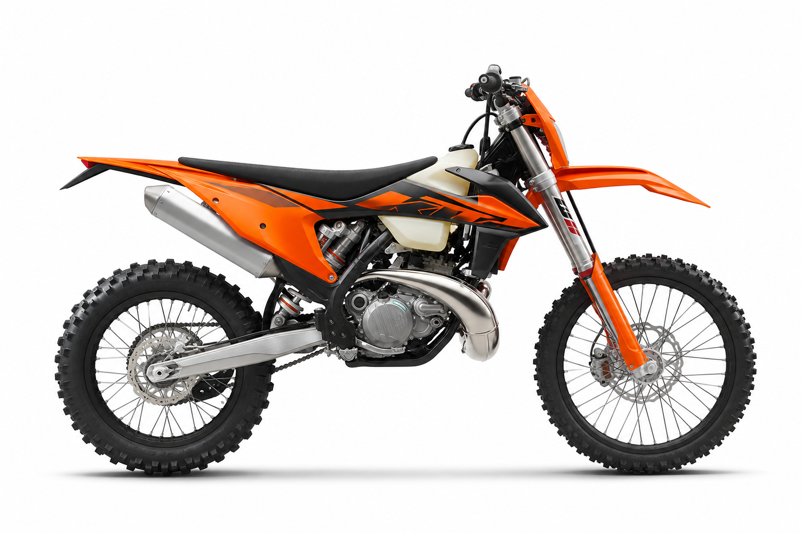

MANTENIMIENTOEn 1,4 h
Revisión de 20 horas
Cambio de aceite de transmisión y revisión general.
Jueves, 4 de septiembre de 2026
Esto es lo que necesita tu KTM hoy.
Tu última salida fue hace 3 días

2 áreas requieren atención
Acciones y avisos que no conviene olvidar.
Cambio de aceite de transmisión y revisión general.
El seguro actual vence el 16 de octubre de 2026.
Última limpieza registrada hace 6 horas.
Los últimos movimientos de tu moto.